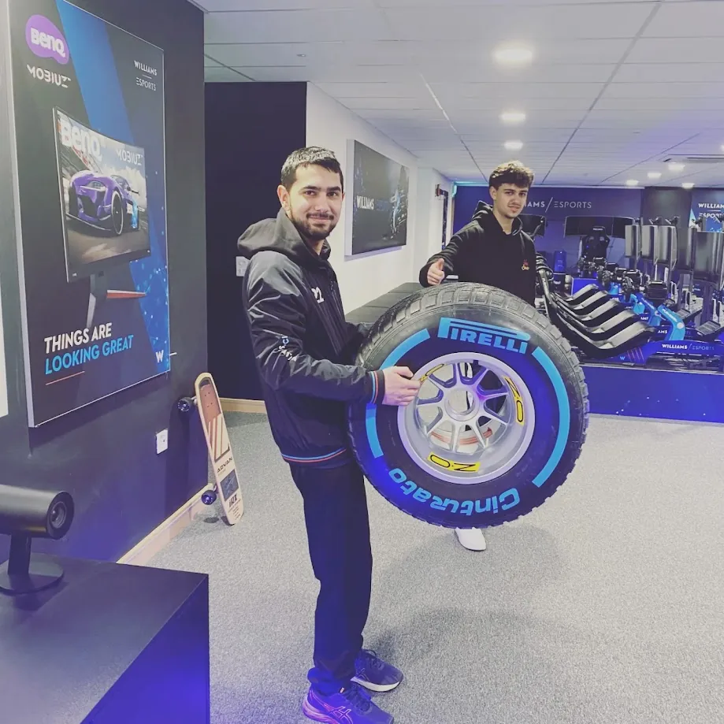
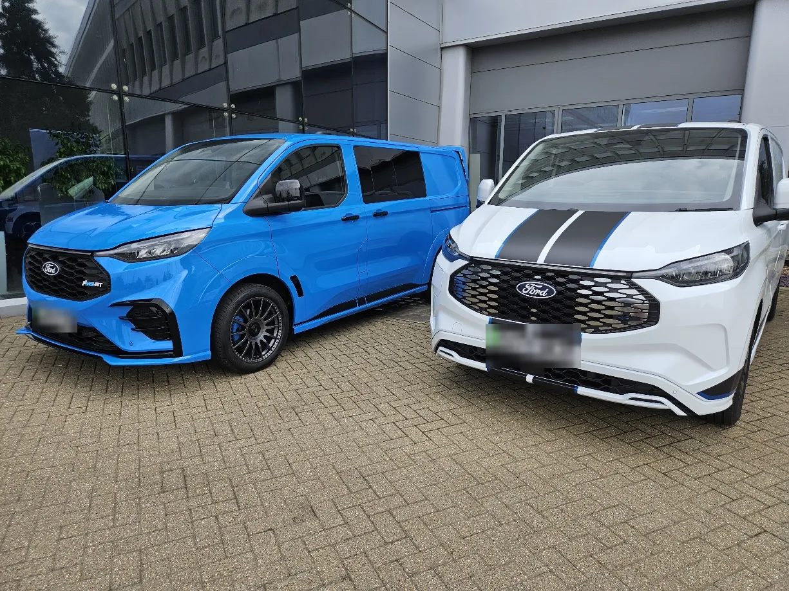
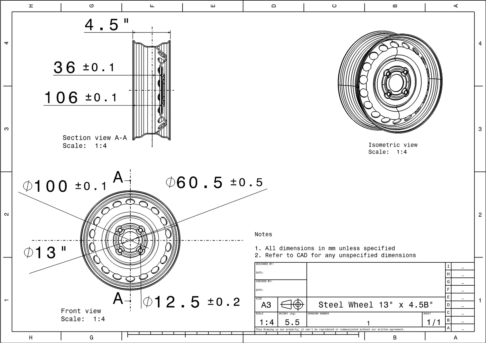
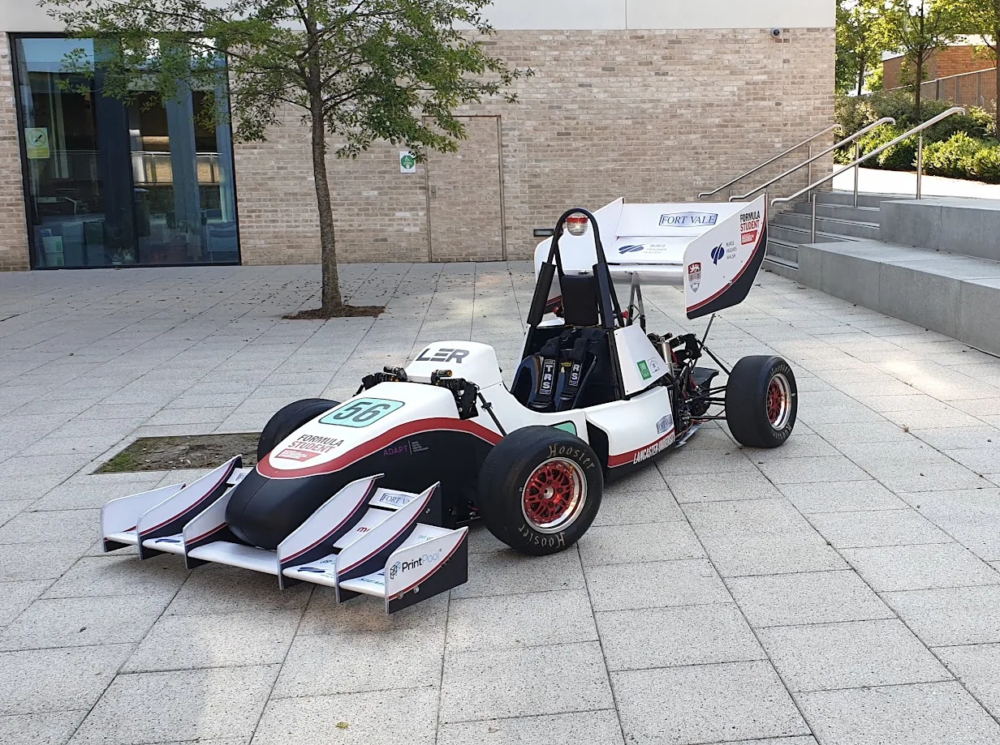

MSc Thesis
HGV Driver Simulator for Roll Stability
Cranfield University · 2026 · Individual research project
Real-time driver-in-the-loop simulator that estimates how close a 28.8-tonne 8×8 test truck is to wheel lift while it is being driven.
- Built a four-axle, two-axle-steered lateral model coupled to single-DoF roll and longitudinal dynamics in MATLAB/Simulink
- Verified within 0.2% of the analytical solution; yaw rate validated against test-truck data (NRMSE 14.8–16.5%)
Result: The predicted wheel-lift threshold roughly halves, from ~0.4 g to ~0.2 g, at the 0.8–0.9 Hz roll resonance. CoG height and longitudinal position are the dominant sensitivities.
View project →

Motorsport
Sim-Racing Performance Engineering
Atlassian Williams F1 Team Gaming · 2022–2026 · Volunteer sim-racing engineer
Telemetry-led setup and performance engineering for the official Williams Racing esports team.
- Analysed lap-time losses across 20+ circuits using MoTeC and bespoke telemetry tools
- Assessed balance, rotation, braking and traction from telemetry and structured driver feedback
- Turned findings into setup changes, including spring and anti-roll-bar stiffness
Result: Two consecutive fourth-place finishes in the F1 Sim Racing Teams' Championship against nine other teams.
View project →

Industry
Wheels & Jack Design and Release
Ford Motor Company (via Caresoft Global) · 2022–2025 · Design & Release Engineer
Production design release of wheels and jacks for Ford's global Transit programmes.
- Reviewed supplier CAD models and drawings in CATIA V5 against fit, interface, manufacturing and GD&T requirements
- Defined DVP&R test requirements and acceptance criteria, and reviewed test evidence
- Resolved component issues across design, test and supplier teams
Result: Design-verification sign-off for 10 wheel designs and one jack design on the Transit V710 programme, within programme timing.
View project →

Group Project
Quadricycle Vehicle & Mobility Service
Cranfield University · 2026 · Deputy Engineer, Vehicle Dynamics (wheels & tyres)
Conceptual design of a quadricycle and the mobility service built around it.
- Derived the per-wheel design load from laden mass, worst-case weight distribution and a 1.5 load factor, then selected tyre and wheel against ETRTO and UNECE requirements
- Modelled cornering stiffness with an explicit ±27% uncertainty band, in the absence of tyre test data
Result: Selected a 155/65 R13 73T tyre (365 kg capacity, 10.6% above the 330 kg design load) on an off-the-shelf 13 × 4.5 steel wheel.
View project →

Formula Student
Wheel Assemblies & Uprights
Lancaster University · 2021 · Wheel Assemblies and Structures Engineer
Uprights and suspension-interface components for the university Formula Student car.
- Designed uprights and mounting brackets in SolidWorks from first-principles load calculations
- Verified structural performance in ANSYS
- Delivered manufacture-ready drawings with tolerances and design-for-manufacture considerations
Result: Front upright CNC-machined in-house from 6061 aluminium; main body within the 1.5 safety-factor target, with 0.53 mm peak deflection under maximum braking (1 mm limit).
View project →